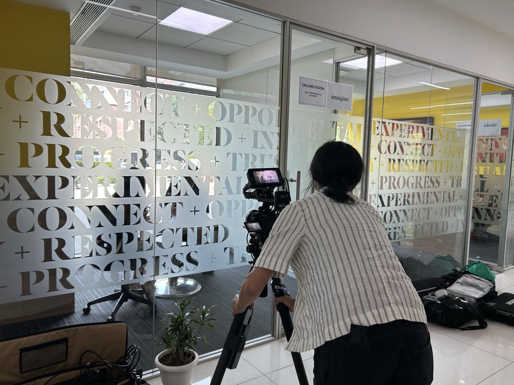
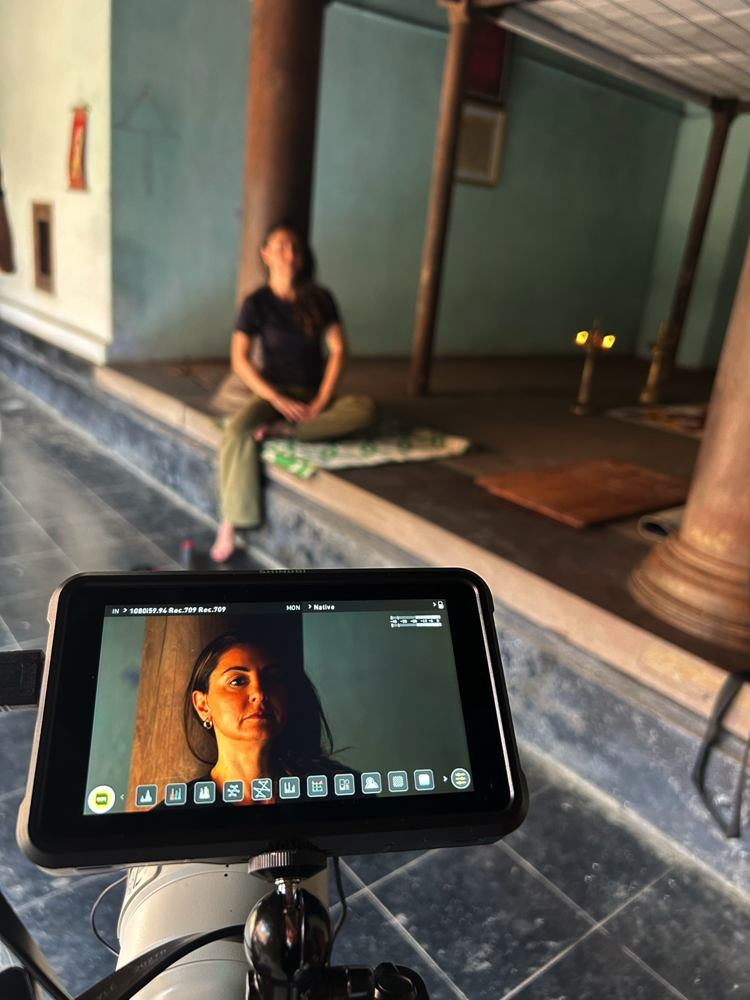
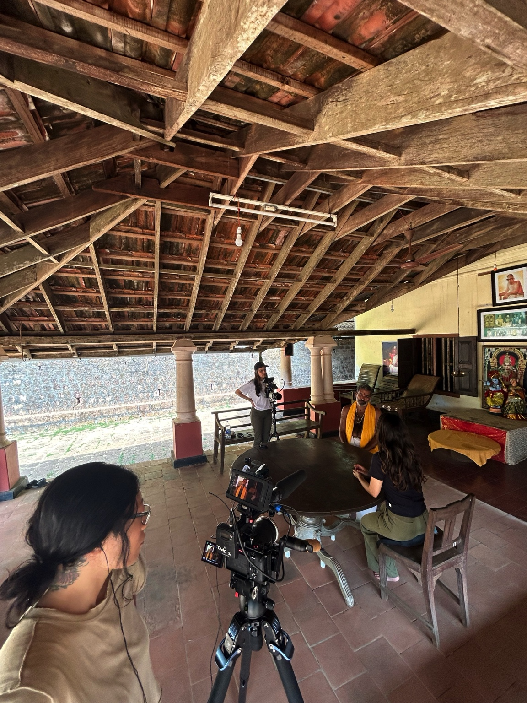
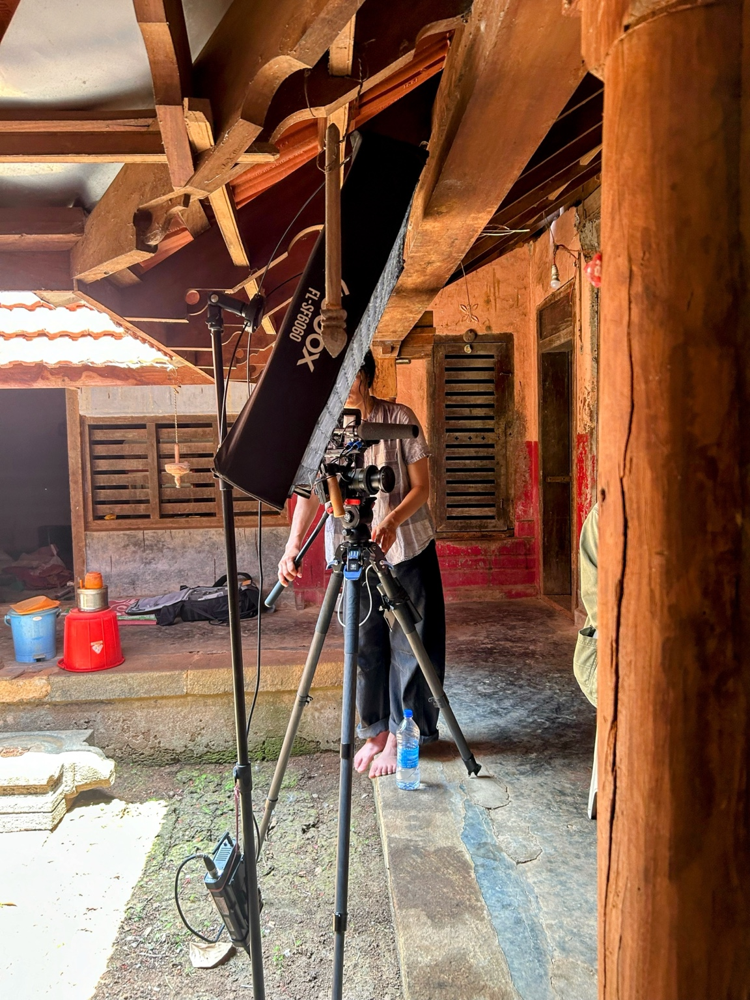
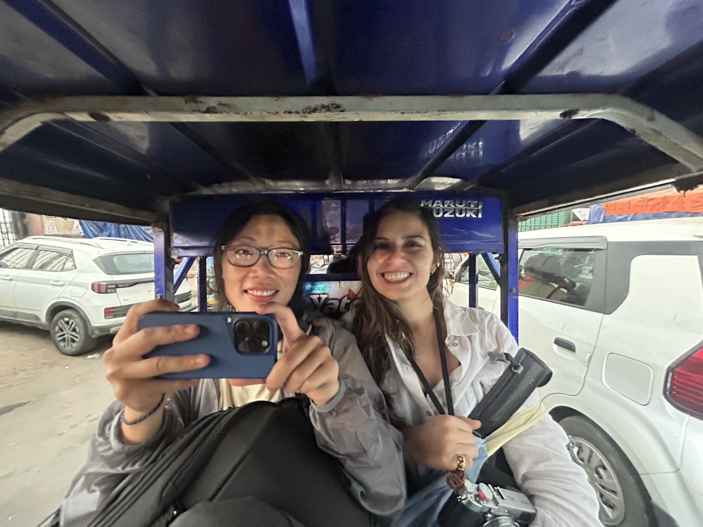
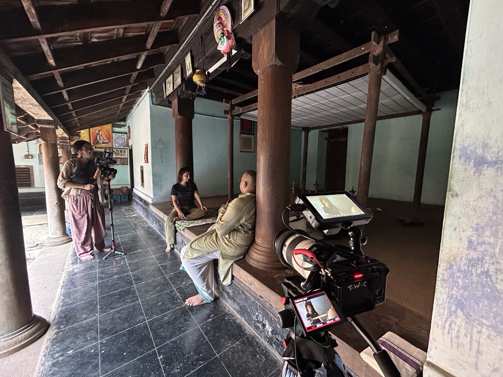
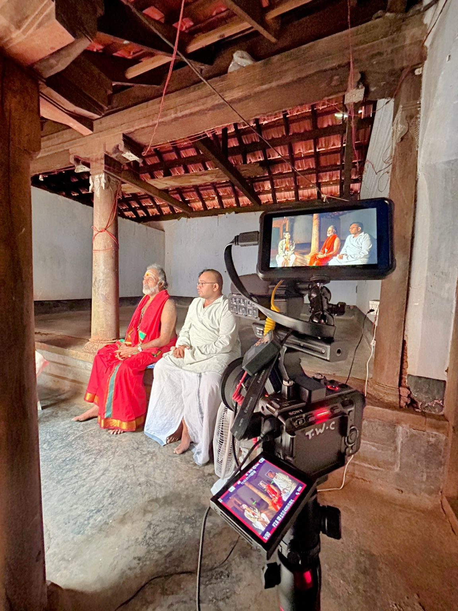
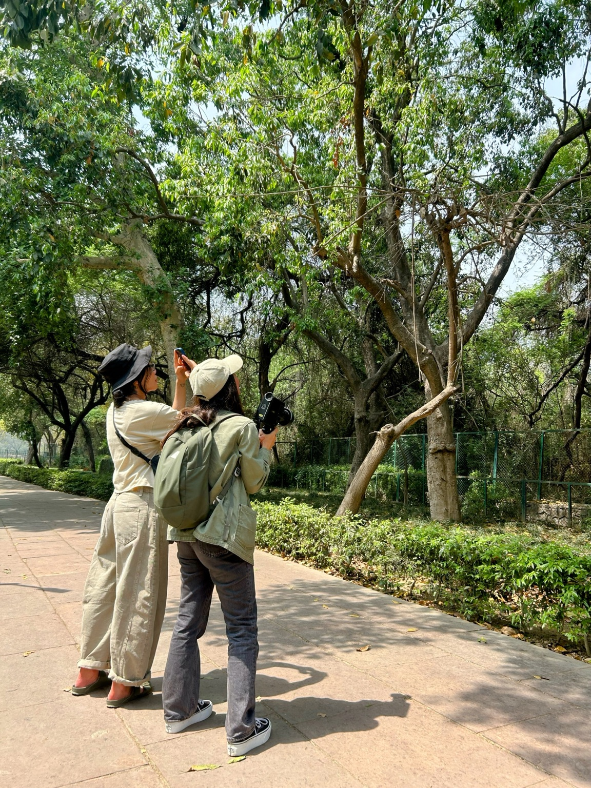
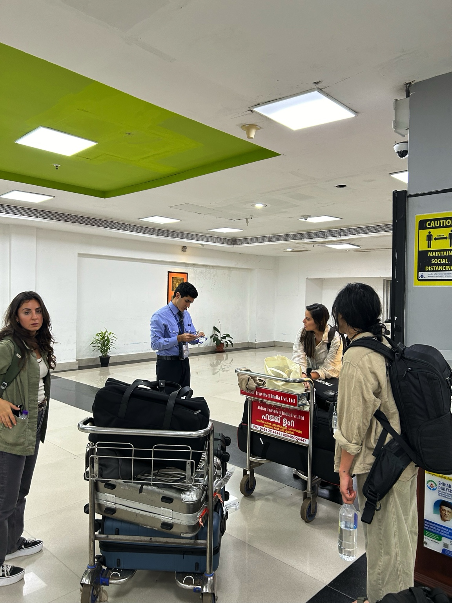

Scripps News · In Real Life · Documentary
The Age of
Astrology

On location in southern India.
Ancient practices.
A modern business.
The Age of Astrology looks at the growing business of astrology through the people, technology and traditions keeping it alive.
The Scripps News In Real Life documentary follows correspondent Gelareh Darabi from a packed convention in Los Angeles to an ashram in southern India, examining how ancient practices are meeting a new generation of believers and consumers.

▶
Watch the filmScripps News · In Real Life
Inside the production








“From ancient rituals to new technology, the story moved between worlds — and the production had to do the same.”
Client / Publisher
Scripps News
Series
In Real Life
Role
Field Producer · 2nd DP
Subject
The modern business of astrology